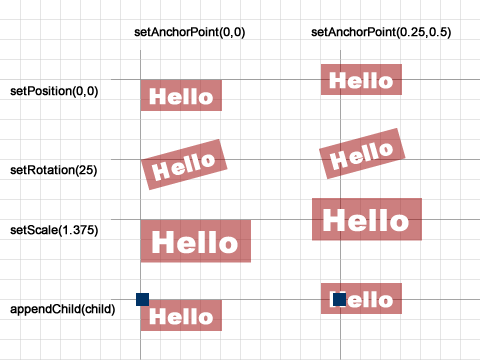
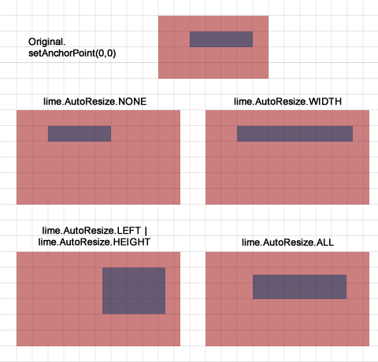

Making flexible views
4 years ago
While creating games with LimeJS you don’t have to think about the different screen sizes your players will be using. In the beginning of your game you just have to define the stage size and we will take care of that you game appears in maximum size on both HD monitors and on an iPhone. This enables you to use fixed positions and sizes, much like in Flash. When the display size or device orientation changes you don’t have to recalculate your game elements positions as your stage is still same size, although it appears visually bigger on the screen.
This all happens automatically for screen sizes. But what should you use when your element itself transforms or elements parent element is resized?
AnchorPoint lets you define the location in your element that is most important for your game object. When you position your element this is the point that is put on the exact position you give in ‘setPosition()’. The element rotates around this point when you use ‘setRotation()’. If you scale an element this location remains in its position and everything around it is scaled. All children of the element are by default positioned by the parent element’s anchor point.
AnchorPoint is defined with ‘setAnchorPoint()’ method. The parameters are vector points in 0 to 1 range where (0,0) means top-left and (1,1) bottom right corner. By default all elements are positioned from the center and so have anchor point set to (0.5,0.5).
1 2 | var sprite = new lime.Sprite().setFill('#c00').setSize(80,30).setAnchorPoint(.25,.5); layer.appendChild(sprite); |
These are some examples of ‘setAnchorPoint()’ in action:

AutoResize is common technique to define item’s size relative to the parents size. For example Flex and UIKit use very similar pattern. In LimeJS there is a method ‘setAutoResize()’. Into this method you can pass the combination of bitmask constants that define the areas that are flexible. So if the parent element’s size changes only the flexible parts get stretched.
All bitmask constants you can use are:
To make a combination of multiple areas you tie them together with | operator(bitwise or) before passing them into ‘setAutoResize()’. By default elements have autoresize mask lime.AutoResize.NONE and therefore do not resize automatically when parent’s size changes.
1 2 3 | var sprite = new lime.Sprite().setFill('#00c').setSize(80,20). setAutoResize(lime.AutoResize.LEFT | lime.AutoResize.HEIGHT); parent.appendChild(sprite); |
And here are the examples:

We are also looking into enabling simple ways for allowing completely different layouts for different orientations and screen size ranges. You can currently also change the stage size during gameplay but manually positioning all elements between different sizes is not easy. If you have some ideas or suggestions about it let us know.